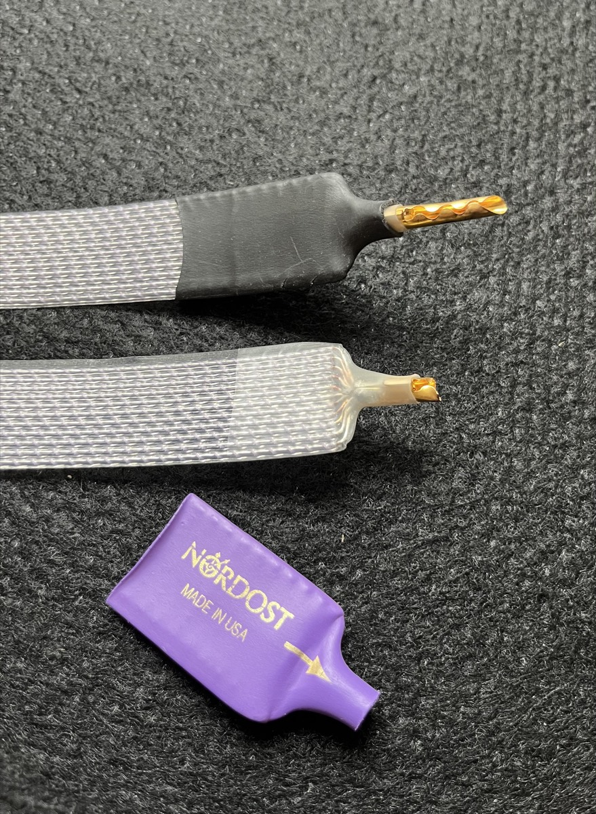
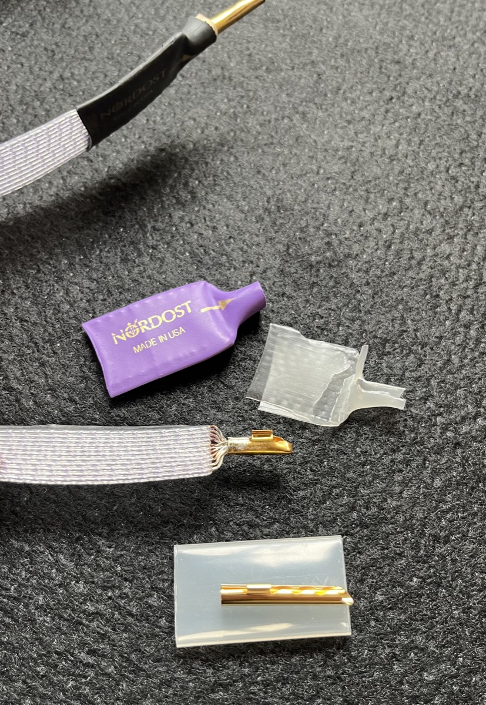
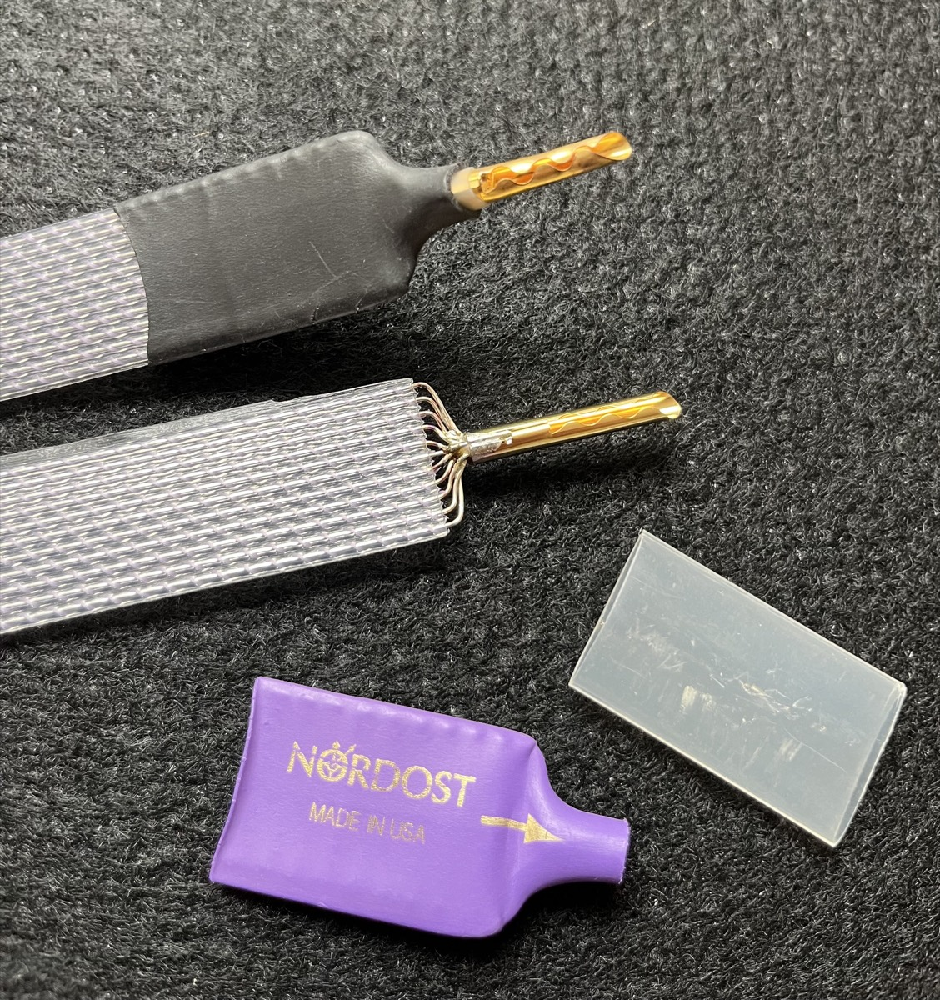
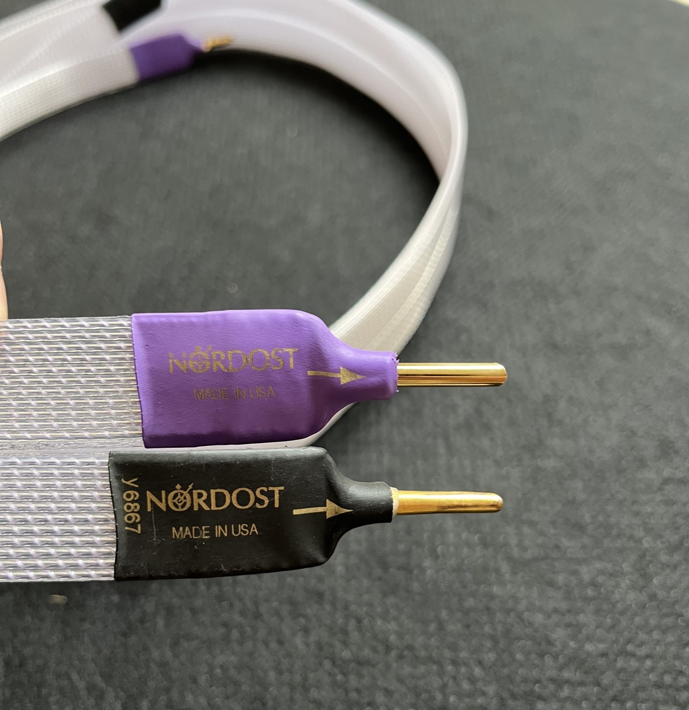

Værkstedet
Ud over vores egen produktion arbejder vi også med følgende.
Ud over vores egne produkter tilbyder vi på værkstedet også service af andre kabelmærker og har samarbejde med flere danske audiobutikker.
- Reparation af de fleste andre kabelmærker
- Om- og reterminering
- OEM-montage, fra hele ruller til enkelte kabler
- Generel kabelmontering
- Generel service af kabler
- Test af geometri og prototypeudvikling
- Rådgivning om materialevalg til produktion
- Test af lødighed med laserverificering af metalkvalitet op til 99,99%
Et Nordost-kabel får her monteret et nyt bananstik efter et uheld.




Vigtig information
Vi tilbyder klasseledende service. Da vi skal leve af tilfredse kunder, går vi rigtig langt for den gode oplevelse og tilbyder følgende uden betaling, på nær materialer.
- 14 dages fuld returret
- Om-terminering hvis uheld skulle ske
- Om-terminering hvis behov ændrer sig, fx skift fra RCA til XLR eller banan til spade
- Ombygning af kabler*
- Service af kabler, fx skift af ydrestrømpe
*Da vi selv laver vores kabler fra bunden, kan vi ombygge dem helt til og fra inderlederen.
Tilbagekøb?
Da ingen kender vores kabler bedre end os, tilbyder vi at tilbagekøbe vores egne kabler eller formidle dem videre til en af vores andre kunder. Vi ønsker egentligt ikke at se vores kabler på brugtmarkedet, så dette er en gratis service.
Alle vores kabler har serienumre, og vores faste services nævnt ovenfor følger selvfølgelig med til næste kunde.